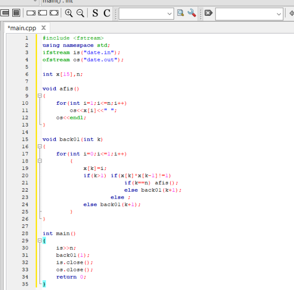
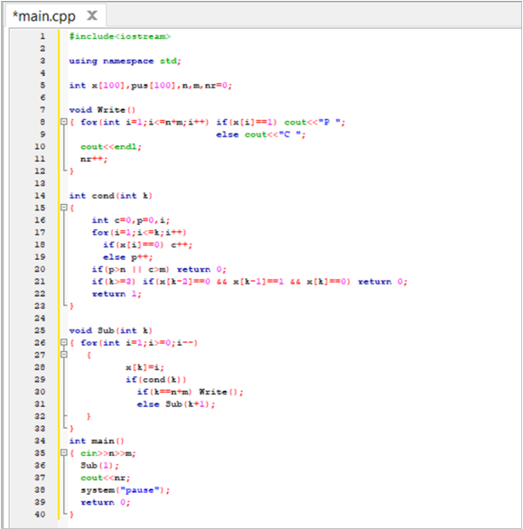
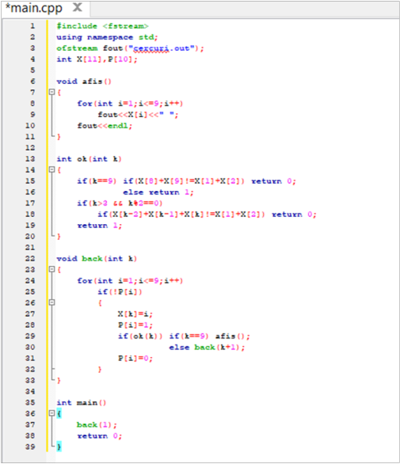
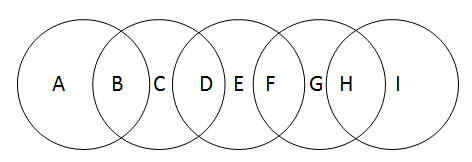

Problema 1. Se citește un număr natural n. Generați și aflați toate combinațiile de câte n cifre binare care nu au două cifre de 1 alăturate. |
Problema 2. De creat un program care să aranjeze în toate modurile n pisici și m câini, astfel încât nici o pisică să nu fie așezată între doi câini. |
|---|---|
|  |  |
Problema 3. Scrieți un program care afișează în fișierul cercuri.out toate modalitățile de înlocuire a literelor din imaginea alăturată cu cifre de la 1 la 9, astfel încât suma cifrelor din fiecare cerc să fie aceeași.
|  |  |